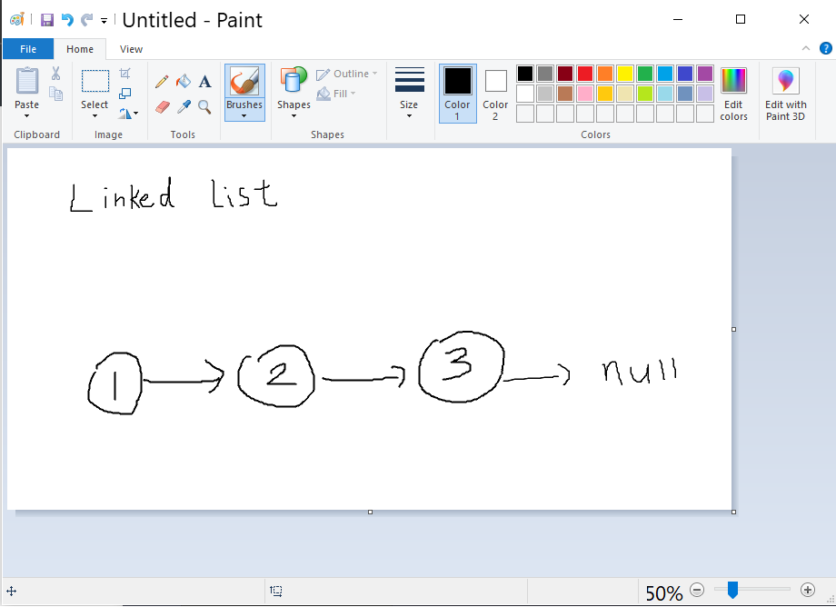

What is AlgoDOM.js?
As a Computer Science student, having deep knowledge in Algorithms and Data Structures is crucial because it helps you pass technical interviews and land jobs.
In order to understand a new data structure or algorithm, it is important to visualize the steps. But, is there a way to draw these diagrams neatly, so that it doesn't look like this?
Turns out there is a solution!
I created AlgoDOM.js so that instructors and students can use JavaScript to seamlessly generate static diagrams and animations to convey various data structures and algorithms. For more details on how to use this library, please visit the 'Documentation' page.